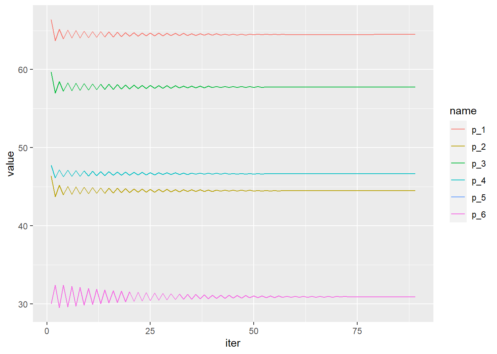
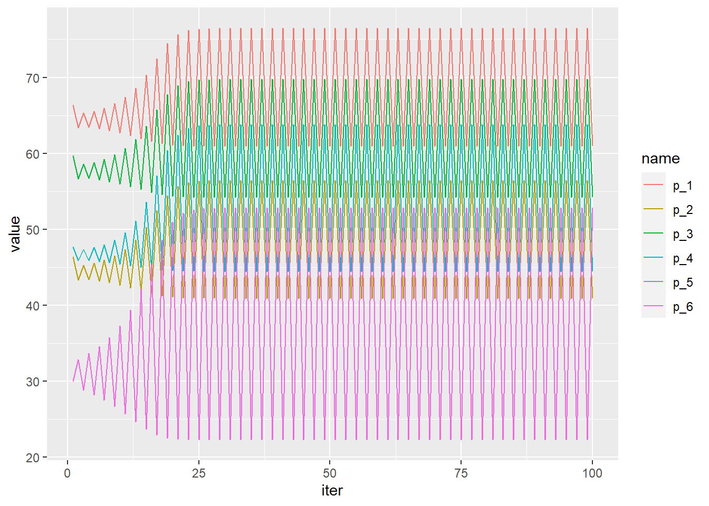

# load packages
library(tidyverse)
options(scipen = 999, digits = 3)Nested Logit
1. Introduction
In the previous document we saw a simplified example of merger simulation with multinomial logit. The next example is a step up in complexity. We’ll replace the model to a One Level Nested Logit. this model allows somewhat more realistic substitution patterns between products. In addition, this document will present the code warped up in functions that take care of several stages of the process.
To perform the simulation we’ll go thorough 4 stages:
- Prepare the data
- Calculate derivative matrix for the One-level nested logit demand system based on Price, market shares, Alpha and Sigma.
- Solve a system of equations that characterize the first order condition of the assumed supply side - Bertrand competition with differentiated products.
- Calculate a post merger new equilibrium based on post merger system of equations.
We’ll present five functions that perform each of those steps and briefly review some key points.
2. Functions
2.1. Data preparation
Prepare data set - f1_init_calibration creates a new data frame in the global environment with necessary variables for the simulation.
The new data frame’s name is calibration data.
When calling the function all arguments must be specified:
(1) data frame that includes the columns listed next. (2) p: product prices. (3) q: quantities sold for each product. (4) firm: the firm that owns the product. (5) nest: the group of products the product belongs to according to the model specified the the researcher. (6) m_size: The market size assumed by the researcher. (The choice of market size actually determines the size of the outside option. This choice has a decisive effect on the results of the simulation, but this subject is beyond the scope of this document). (7) buyer: The acquirer firm. (8) seller: the purchased firm.
f1_init_calibration <- function(data, p, q, firm, nest, m_size, buyer, seller){
data <- data %>%
rename(p = {{p}}, q = {{q}},firm = {{firm}}, nest = {{nest}}, m_size = {{m_size}})
nest_mat <<- outer(data$nest, data$nest, FUN = "==") * 1 # nest matrix
calibration_data <<-
data %>%
select(p, q, firm, nest, m_size) %>%
mutate(
p = as.numeric(p),
q = as.numeric(q),
s = q / m_size, # product market share
s_0 = 1 - sum(s), # outside option market share
s_g = as.numeric(nest_mat %*% s), # share of each nest
s_jg = s / s_g, # share of product j in nest g
firm_post = if_else(firm == {{seller}}, {{buyer}}, firm),
n = n()) %>% na.omit()
}2.2. Derivative matrix
f2_derivatives builds and returns the derivative matrix from the shares, alpha and sigma.
In one level nested-logit there are 3 types of derivatives:
(1) Own derivative (which should be all negative -> demand goes down as price goes up)
(2) cross derivative for products in the same nest.
(3) cross derivative for products in a different nest. (These are the same as the cross derivatives in the Multinomial Logit model)
f2_derivatives <- function(shares, nest_shares, alpha, sigma){
# preparations
s <- shares
s_jg <- nest_shares
n <- length(s)
alpha <- - abs(alpha) # to avoid confusion. fix the sign of alpha
# derivatives
cross_different <- - alpha * s %o% s * (1 - nest_mat)
cross_same <-
- alpha * (sigma / (1 - sigma) * s_jg + s) %o% s * nest_mat *
(1 - diag(x = 1,nrow = n))
own <- alpha * s * (1 / (1-sigma) - sigma / (1-sigma) * s_jg - s)
# warp it in the matrix
derivatives <- cross_different + cross_same + diag(own)
derivatives
}2.3. Pre-merger conditions
f3_pre_merger_conditions gets as inputs the calibration_data we created in the global environment, a derivatives matrix and the assumed \(sigma\), the parameter for correlation between products in the same nest.
f3_pre_merger_conditions solves the first order condition of the equation system, and calculates several supplemented variables:
(1) Profit margins and (2) Lerner index to check profitability, the (3) Delta which is the mean utility the consumer has with the prevailing prices and a (4) FOC condition to see if the iteration process that will come next converges to zero.
The new variables are added the the calibration_data in the global environment.
f3_pre_merger_conditions <- function(c_data, derivatives, sigma){
theta <- outer(c_data$firm, c_data$firm, FUN = "==") * 1 # ownership matrix
s <- c_data$s
p <- c_data$p
# system solution for marginal costs
c_data$mc <- solve(derivatives * theta) %*% s + p
c_data <- c_data %>%
mutate(margin = p - mc,
lerner_index = (p - mc) / p,
FOC = as.vector(s + (theta * derivatives) %*% (p - mc)),
delta = log(s / s_0) - sigma * log(s_jg)
)
calibration_data <<- c_data
}2.4. Simulate the merger
2.4a. Nested logit Demand function
In the process of looking for a new equilibrium after the merger, we need to use the consumers demand function. Every time the prices change, the mean utility of the consumer changes, hence the quantity demand will change. f5_demand is the demand function. It calculates the market shares that will prevail given a vector of prices. Its arguments are delta- the mean utility from consumers have for each product, and \(sigma\) - the in-nest correlation parameter according to the nested logit model.
The user need not operate this function. It will be called from within f4_fixed_point that will calculate the new equilibrium.
f5_demand <- function(delta, sigma){
# demand function
exponent <- exp(delta /(1-sigma))
D_g <- unique(nest_mat, MARGIN = 1) %*% exponent
denominator <- D_g ^ sigma * (1 + sum(D_g^(1-sigma)))
s_t <- as.vector(exponent * unique(nest_mat, MARGIN = 2) %*% (1/ as.vector(denominator)))
# nest shares
s_g <- as.numeric(nest_mat %*% s_t) # nest market share
s_jg <- s_t / s_g # share within the nest
data.frame(s_t = s_t, s_jg_t = s_jg, delta_t = delta, n = length(s_t))
}2.4b. Fixed point iteration
f4_fixed_point calculates the new equilibrium with a fixed point iteration algorithm.
It uses the f5_demand f2_derivatives and solves the FOC iteratively until solution is reached or until the maximum number of iterations is reached.
The user has control over the maximum number of iterations and the tolarance desired for convergence.
we shall expand about the argument convergence_factor later.
f4_fixed_point <-
function(data, alpha, sigma, max_iter = 100,
convergence_factor = 1, tolerance = 1e-3){
theta_post <- outer(data$firm_post, data$firm_post, FUN = "==") * 1
s_in <- data$s
p <- data$p
mc <- data$mc
delta <- data$delta
der_new <- f2_derivatives(calibration_data$s, calibration_data$s_jg, alpha, sigma)
log <- matrix(nrow = max_iter, ncol = length(s_in) + 2)
i <- 0
s_d_norm <- 1
while(i < max_iter & s_d_norm > tolerance){
i <- i + 1
p_new <- mc - (solve(der_new * theta_post)) %*% s_in # new price
delta_new <- delta - abs(alpha) * as.vector((p_new - p)/ convergence_factor)
s_new <- f5_demand(delta_new, sigma)
der_new <- f2_derivatives(s_new$s_t, s_new$s_jg_t, alpha, sigma)
s_d_norm <- sqrt(sum((s_in - s_new[[1]]) ^ 2)) # measure convergence
s_in <- s_new[[1]] # new price vector to feed in
log[i,] <- c(p_new, norm = s_d_norm,iteration = i) # results
}
log <- data.frame(log) %>% drop_na()
names(log)<- c(paste("p", 1:length(s_in), sep = "_"), "norm", "iter")
simulation_log <<- log
tail <- tail(log,1)
data$new_prices <- tail %>% select(starts_with("p_")) %>% t() %>% as.vector()
data$iterations <- tail %>% select(iter) %>% pull()
data$norm <- tail %>% select(norm) %>% pull()
data$new_shares <- s_new[[1]]
calibration_results <<- data %>%
select(firm, nest, p, new_prices, s, new_shares,
iterations, norm, q, m_size)
}3. Simulation
3.1 Build toy data
Its about time to see it all in action.
we’ll create a toy data of 6 products owned by 3 firms, divided into 2 nests.
market size will be 100.
df <- data.frame(
company = c("a", "a", "b", "b", "c", "c"),
nests = c("pre", "pre", "pre", 2, 2, 2),
quantity = c( 20, 5, 10, 5, 10, 25),
price = c( 60, 40, 50, 45, 30, 30),
m_size = 100,
not_needed_variable = "junk")
df company nests quantity price m_size not_needed_variable
1 a pre 20 60 100 junk
2 a pre 5 40 100 junk
3 b pre 10 50 100 junk
4 b 2 5 45 100 junk
5 c 2 10 30 100 junk
6 c 2 25 30 100 junkWe can prepare the data for simulation using f1_init_calibration:
Note that all argument are needed for the function to know which variable is which:
prices, quantities, firm, nest, market size, buyer and seller.
f1_init_calibration(df, p = price, q = quantity, firm = company, nest = nests,
m_size = m_size, buyer = 'a', seller = 'b')A new df namedcalibration_data was created in the global environment:
calibration_data p q firm nest m_size s s_0 s_g s_jg firm_post n
1 60 20 a pre 100 0.20 0.25 0.35 0.571 a 6
2 40 5 a pre 100 0.05 0.25 0.35 0.143 a 6
3 50 10 b pre 100 0.10 0.25 0.35 0.286 a 6
4 45 5 b 2 100 0.05 0.25 0.40 0.125 a 6
5 30 10 c 2 100 0.10 0.25 0.40 0.250 c 6
6 30 25 c 2 100 0.25 0.25 0.40 0.625 c 63.2. Assume regression results
If one does a Nested Logit demand estimation successfully , one has the right \(sigma\) and \(alpha\) to put into the simulation. here, we assume those parameters to be:
sigma0.5 <- 0.5
alpha0.1 <- 0.1This does not have to be an arbitrary assumption, rather it can be based on the knowledge we have about the market.
3.3. Checking Derivatives
Lets see how the derivative matrix is like for this toy data.
In actual simulation this function is being called from f4_fixed_point, so there is no need to call it.
der <- f2_derivatives(calibration_data$s, calibration_data$s_jg, alpha0.1, sigma0.5)
der [,1] [,2] [,3] [,4] [,5] [,6]
[1,] -0.02457 0.00386 0.00771 0.00100 0.00200 0.00500
[2,] 0.00386 -0.00904 0.00193 0.00025 0.00050 0.00125
[3,] 0.00771 0.00193 -0.01614 0.00050 0.00100 0.00250
[4,] 0.00100 0.00025 0.00050 -0.00913 0.00175 0.00437
[5,] 0.00200 0.00050 0.00100 0.00175 -0.01650 0.00875
[6,] 0.00500 0.00125 0.00250 0.00438 0.00875 -0.02813Glimpsing on it, it look like the own derivative in the diagonal is negative and the rest is positive.
3.4. Pre-merger conditions
Now we calculate the marginal costs of the firms. all new variables are added to the calibration_data .
f3_pre_merger_conditions(calibration_data, der, sigma0.5)
calibration_data p q firm nest m_size s s_0 s_g s_jg firm_post n mc margin
1 60 20 a pre 100 0.20 0.25 0.35 0.571 a 6 50.3 9.66
2 40 5 a pre 100 0.05 0.25 0.35 0.143 a 6 30.3 9.66
3 50 10 b pre 100 0.10 0.25 0.35 0.286 a 6 43.6 6.38
4 45 5 b 2 100 0.05 0.25 0.40 0.125 a 6 39.2 5.83
5 30 10 c 2 100 0.10 0.25 0.40 0.250 c 6 17.1 12.90
6 30 25 c 2 100 0.25 0.25 0.40 0.625 c 6 17.1 12.90
lerner_index FOC delta
1 0.161 0.0000000000000000000 0.0567
2 0.241 0.0000000000000000000 -0.6365
3 0.128 -0.0000000000000000278 -0.2899
4 0.130 0.0000000000000000208 -0.5697
5 0.430 0.0000000000000000000 -0.2231
6 0.430 0.0000000000000000000 0.23503.5. Check the demand system
For the sake of presentation, lets see that the demand function works correctly.
Feeding the delta’s consumers had, we should get the same market shares we assumed.
Every time the price will change, the delta will change and so the shares.
f5_demand(calibration_data$delta, sigma0.5) s_t s_jg_t delta_t n
1 0.20 0.571 0.0567 6
2 0.05 0.143 -0.6365 6
3 0.10 0.286 -0.2899 6
4 0.05 0.125 -0.5697 6
5 0.10 0.250 -0.2231 6
6 0.25 0.625 0.2350 6We got the same market shares we chose when we first built our toy data, so its OK.
3.6. Simulate the merger
At last, we can simulate the merger.
Using the fixed point iteration, we get a new df named calibration_results with the results of the simulation.
f4_fixed_point(calibration_data, alpha0.1, sigma0.5, convergence_factor = 1.2)
calibration_results firm nest p new_prices s new_shares iterations norm q m_size
1 a pre 60 64.5 0.20 0.1736 89 0.000972 20 100
2 a pre 40 44.5 0.05 0.0434 89 0.000972 5 100
3 b pre 50 57.8 0.10 0.0502 89 0.000972 10 100
4 b 2 45 46.7 0.05 0.0486 89 0.000972 5 100
5 c 2 30 30.9 0.10 0.1109 89 0.000972 10 100
6 c 2 30 30.9 0.25 0.2772 89 0.000972 25 100calibration_results gives the new prices and new shares, reports how many iterations were needed to converge to the tolerance of 1/1000 and reports the norm of the change in prices in the last iteration.
We can watch the entire process in the simulation_log object created in the global environment.
rbind(head(simulation_log),tail(simulation_log)) p_1 p_2 p_3 p_4 p_5 p_6 norm iter
1 66.4 46.4 59.7 47.7 30.0 30.0 0.098581 1
2 63.7 43.7 57.0 46.1 32.4 32.4 0.082170 2
3 65.2 45.2 58.5 47.2 29.5 29.5 0.077062 3
4 64.0 44.0 57.2 46.3 32.4 32.4 0.073149 4
5 65.1 45.1 58.3 47.1 29.6 29.6 0.069658 5
6 64.0 44.0 57.3 46.3 32.2 32.2 0.066111 6
84 64.5 44.5 57.8 46.7 30.9 30.9 0.001254 84
85 64.5 44.5 57.8 46.7 30.9 30.9 0.001191 85
86 64.5 44.5 57.8 46.7 30.9 30.9 0.001132 86
87 64.5 44.5 57.8 46.7 30.9 30.9 0.001076 87
88 64.5 44.5 57.8 46.7 30.9 30.9 0.001023 88
89 64.5 44.5 57.8 46.7 30.9 30.9 0.000972 89simulation_log %>% select( - norm) %>%
pivot_longer(1:6) %>%
ggplot(aes(x = iter, y = value, color = name)) + geom_line()
Note that when we called f4_fixed_point we used a convergenc_factor of 1.2.
As it happens, this data consists of only 6 observations and the fixed point algorithm doesn’t converge naturally with a convergence_factor of 1.
At best practice, one should use a convergence_factor of 1, and only if there’s a problem to choose a convergence_factor > 1.
Lets see what happens if we chose convergence_factor = 1.
f4_fixed_point(calibration_data, alpha0.1, sigma0.5, convergence_factor = 1)Prices and shares are constantly jumping between two points.
simulation_log %>% select( - norm) %>%
pivot_longer(1:6) %>%
ggplot(aes(x = iter, y = value, color = name)) + geom_line()
calibration_resaults also tells us that the norm is far far away from zero:
calibration_results firm nest p new_prices s new_shares iterations norm q m_size
1 a pre 60 60.9 0.20 0.28013 100 0.637 20 100
2 a pre 40 40.9 0.05 0.07003 100 0.637 5 100
3 b pre 50 54.2 0.10 0.07268 100 0.637 10 100
4 b 2 45 44.5 0.05 0.20641 100 0.637 5 100
5 c 2 30 52.8 0.10 0.00387 100 0.637 10 100
6 c 2 30 52.8 0.25 0.00967 100 0.637 25 100